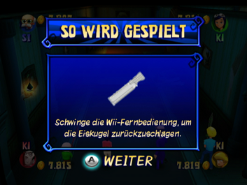

10 |
Gameplay |
 |
Der Spieler wählt eine Spielfigur und betritt das Geisterhaus, um dort mit Minispielen, Brettspiel-Challenges und Sonderereignissen überrascht zu werden, die von den Spielfeldern ausgelöst werden, auf denen die Gruppe landet oder die sie passiert. Dabei kommt die Gruppe der Lösung des Passworts und damit dem verborgenen Schatz Stück für Stück näher. Bildschirm Niveau Hier wird das Niveau des Spiels eingestellt. Es stehen 3 Stufen zur Verfügung (Leicht, Normal und Schwer). Auf den schwereren Niveaus sind die Rätsel komplizierter und das geheime Passwort ist dadurch schwerer zu erraten. Im Modus Abenteuer werden die Minispiele stufenweise schwerer. Bildschirme Spielfigur wählen und Zahl der menschlichen Spieler wählen Hier können der oder die Spieler sich jeweils für eine der Spielfiguren entscheiden. Verbleibende Spielfiguren werden von der KI gesteuert. Du kannst den B-Knopf drücken, um die Wahl der Spielfigur aufzuheben. Der Bildschirm Zahl der menschlichen Spieler wählen ist über den Bildschirm Spielfigur wählen zu erreichen. Vier verschiedene Einstellungen sind möglich: 1 Spieler und 3 KI-Spielfiguren 2 Spieler und 2 KI-Spielfiguren 3 Spieler und 1 KI-Spielfigur 4 Spieler In ein laufendes Spiel einsteigen Eine KI-Spielfigur kann jederzeit von einem weiteren Mitspieler ersetzt werden. Der neue Mitspieler muss dazu seine Wii-Fernbedienung an der Wii-Konsole anmelden (falls dies nicht bereits erfolgt ist) und ersetzt dabei die KI-Spielfigur, deren Nummer der Spieler-Anzeige an der Wii-Fernbedienung entspricht. So ersetzt z.B. der Spieler mit der Wii-Fernbedienung, deren Spieler-3-Anzeige leuchtet, die KI-Spielfigur mit der Nummer 3. Der neue Mitspieler setzt das Spiel mit der Anzahl von Münzen fort, die die KI-Spielfigur bis zu diesem Zeitpunkt gesammelt hat. Ein Mitspieler kann allerdings nicht von einer KI-Spielfigur ersetzt werden. Bildschirm Brettspiel-Challenge-Tutorial  Zu Beginn einer Brettspiel-Challenge wird ein kurzes Tutorial angezeigt. Minispiele aktivieren Anfangs sind nicht alle Minispiele im Modus Minispiele verfügbar; sie werden nach und nach im Modus Abenteuer aktiviert. |
 |
 |
 |